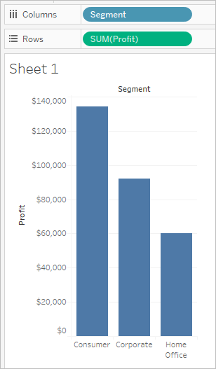
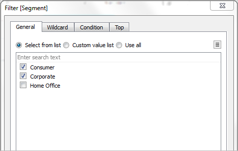
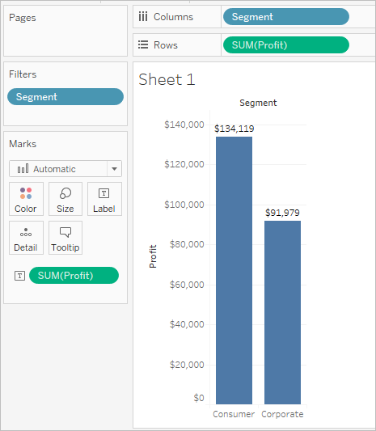
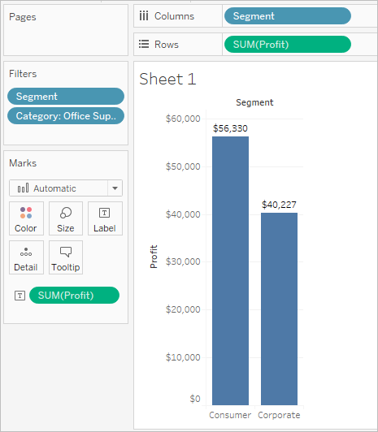

Filters shelf
The Filters shelf allows you to specify which data to include and exclude. For example, you might want to analyze the profit for each customer segment, but only for certain shipping containers and delivery times. By placing fields on the Filters shelf, you can create such a view.
You can filter data using measures, dimensions, or both at the same time. Additionally, you can filter data based on the fields that make up the columns and rows of the table. This is called an internal filter. You can also filter data using fields that don’t contribute headers or axes to the table. This is called an external filter. All filtered fields display on the Filters shelf.
To illustrate the basic concepts of filtering, consider the following view.

Suppose you are not interested in the Home Office data. You can remove this column from the view by filtering the Segment dimension. To do so, select Filter on the field menu or drag the Segment dimension to the Filters shelf. The Filter dialog box opens. By default all members are selected. Clear the check box for Home Office to exclude it from the view. All selected members will be included.

As shown below, the view updates and the Home Office column is removed. The filter is indicated by the Segment field on the Filters shelf.

Suppose you want to only view profit for a category of the products. Even though the Category field is not used on the Rows and Columns shelves or on the Marks card, you can still add a filter. Drag the Category dimension to the Filters shelf. This is an example of an external filter because Category is not part of the view.
The Filter dialog box automatically opens. By default, none of the members are selected. Select the members you want to keep as part of the view. All cleared members are excluded. In this example, Office Supplies is selected.
The modified data view is shown below. The mark label shows that the sum of the profit for the Consumer segment has decreased to $56,330. This number is derived by summing all the rows in the data source that are associated with the Corporate market and are part of the Office Supplies category.

The order of fields placed on the Filters shelf does not affect the data view because the filters are independent. In other words, the result of filtering by customer segment, and then by container is the same as filtering by container and then by customer segment.
Created with the Personal Edition of HelpNDoc: Easily create Qt Help files